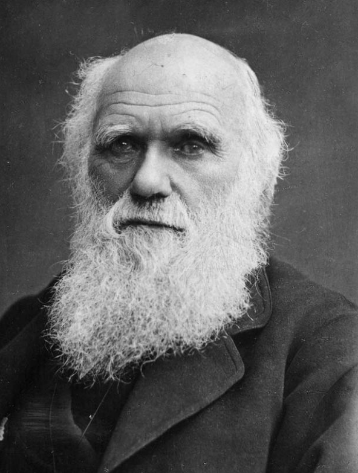
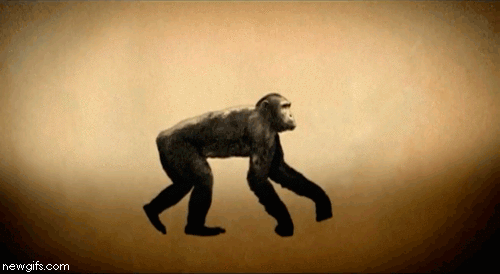

Home
Fun Facts
About Charles Darwin

Charles Darwin is a very famous biologist who
developed the theory evolution. He was born on the 12th
of Febuary 1809.
In 1831 Darwin set sail on the HMS Beagle, a naval
survey ship. Darwin was there to collect plant and animal
specimens
from the countries and islands the ship visited.
The voyage took five years.
For Charles Darwin, the most important part
of the journey was the time spent in the Galapagos
Islands. These islands are the home to plants and
animals that can’t be found anywhere else in the world. Darwin
noticed that each of the different islands was home to a
different type of tortoise. When the Beagle returned to
England, Darwin began to study the specimens he had collected
in more detail, he realised that the differences in
finches of the Galapagos Islands followed a similar pattern
to those he had observed in the tortoises. The finches
from all of the islands were similar, but birds from different
islands had different beaks.
He realized that the animals have adapted.
